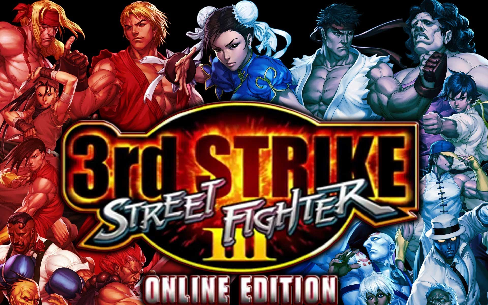

Street Fighter 3
imagem do jogo Street fighter 3
Street Fighter III: New Generation (em japonês: (em japonês: 2009ァのIII -New Generation-) é um jogo de vídeo de luta da série Street Fighter da Capcom, originalmente lançado como um jogo de arcade operado por moedas em 1997. O nome do jogo como aparece no gabinete é Three: A New Generation of Street Fighters. [1][2] Street Fighter III foi produzido para o hardware CP System III baseado em CD-ROM,[3] que permitiu gráficos 2D mais elaborados do que os jogos Street Fighter Alpha baseados em CPS II (a encarnação anterior da série Street Fighter), enquanto renovava muitas das mecânicas de jogo. O jogo, que foi projetado como uma sequência direta de Street Fighter II, inicialmente descartou todos os personagens anteriores, exceto Ryu e Ken (daí a legenda "Nova Geração"), introduzindo uma nova lista liderada por Alex. Da mesma forma, um novo antagonista chamado Gill assumiu o papel de M. Bison dos jogos anteriores como o novo personagem chefe.
Street Fighter III foi seguido por duas atualizações: Street Fighter III: 2nd Impact em 1997 e Street Fighter III: 3rd Strike em 1999. Uma única versão caseira do jogo foi lançada para o Dreamcast em uma compilação de dois em um intitulada Street Fighter III: Double Impact, que também inclui 2º Impacto.
Como seus antecessores, Street Fighter III é um jogo de luta um-a-um, no qual dois lutadores usam uma variedade de ataques e movimentos especiais para nocautear seu oponente. A jogabilidade do Street Fighter III original tem várias novas habilidades e recursos introduzidos. Algumas habilidades também são tiradas de outros jogos de luta da Capcom, como jogadores sendo capazes de "correr" ou "recuar" como na série Darkstalkers,[4] bem como realizar "super saltos" e "posições rápidas" depois de cair de um ataque como em X-Men: Filhos do Átomo. O jogo também introduziu "ataques de salto", que são pequenos ataques de salto usados contra oponentes agachados. Além disso, o jogador não pode executar "guardas aéreos" como na série Street Fighter Alpha, mas em vez disso é substituído por "parrying" ("bloqueio" na versão japonesa). [5]
O jogo de luta SNK de 1994 Samurai Shodown II é frequentemente creditado com a introdução do primeiro sistema Parry. A principal novidade é a capacidade de parry um ataque do oponente, desviando qualquer ataque de entrada sem receber dano. No exato momento em que o ataque de um oponente está prestes a atingir seu caráter, o jogador pode mover o controlador em direção ou para baixo para Parry o ataque sem receber dano, deixando o oponente vulnerável para um contra-ataque. Além disso, isso permite que o jogador se defenda contra Special Moves e até super Arts sem sustentar o dano menor normal que o bloqueio normalmente incorreria. No entanto, a parrying requer um tempo preciso. [5]
O outro novo recurso introduzido em Street Fighter III é Super Arts. Este é um poderoso movimento especial semelhante a um Super Combo em Super Turbo e os jogos Alpha. [5] Depois de selecionar um personagem, o jogador será solicitado a selecionar entre uma das três Super Artes específicas do personagem para usar em batalha. [5] Como o medidor super combo em jogos anteriores, o jogador tem um medidor de Super Art que vai encher à medida que o jogador executa movimentos regulares e especiais contra um oponente. O jogador só pode executar uma Super Arte quando o medidor estiver preenchido. [5] Dependendo da Super Arte escolhida pelo jogador, o comprimento do medidor de Super Art vai variar, bem como a quantidade de medidores de Super Art preenchidos que o jogador pode estocar. Os jogadores agora podem cancelar uma mudança especial para uma Super Arte, uma técnica emprestada do Street Fighter EX.
Entre os sprites elaborados incluem vários golpes de atordoamento, incluindo um novo "estado de virada", no qual um personagem é virado (suas costas enfrenta o oponente) após ser atingido. Apenas certos ataques podem colocar personagens em um estado de reviravolta, e agarra e lança agora pode ser comboed, pois normalmente leva mais tempo para um personagem atacado se recuperar deste novo tipo de golpe atordoante.